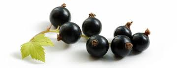
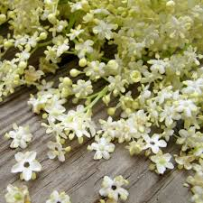
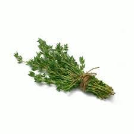

Blackcurrant
As well as high levels of Vitamin C and other antioxidants, blackcurrants contain soluble and insoluble fibre as well as important carbohydrates to give you energy. Soluble fibre helps to slow down the release of nutrients, particularly glucose, into the blood stream, which is healthier for the body. Find yourself slumping at your desk mid-afternoon? Try swapping your energy drink for a fruity blackcurrant tea. Rich in anti-oxidants, research has shown that blackcurrant extract can help people stay more alert, reduce mental fatigue and even work with greater accuracy while under significant mental stress. Black currant doesn't only tastes great, it may offer many great health benefits such as regulating blood pressure, increasing fat oxidation and promoting skin health. A black currant is a diminutive fruit that packs a big nutritional punch in a small package. Each dried berry in Tea Forté’s black currant tea blends contains a dose of antioxidants believed to reduce cancer-causing free radicals in the human body. A cup of tea made with this vibrant ingredient delivers a generous serving of vitamin C that may stave off colds and infections. Black currant also provides a serving of blood-building iron, as well as plenty of eye-protective vitamin A and gamma-linolenic acid (GLA), which may boost the effectiveness of the human immune system. Blackcurrants crop best in a sunny location but will also do well in light shade. Blackcurrants are easy to grow, producing a delicious summer harvest with little upkeep required.
Elderflower
An extract of the flower is used to make medicine. Elderflower is used for swollen sinuses (sinusitis), colds, influenza (flu), swine flu, bronchitis, diabetes, and constipation. It is also used to increase urine production (as a diuretic), to increase sweating (as a diaphoretic), and to stop bleeding. It is thought to be helpful for cooling down a fever, increasing circulation, and boosting the immune system with vitamin C and antioxidants. The berries and flowers of elderberry are packed with antioxidants and vitamins that may boost your immune system. They could help tame inflammation, lessen stress, and help protect your heart, too. Some experts recommend elderberry to help prevent and ease cold and flu symptoms. Depending upon where you live, elderflowers are at their peak in late spring to early summer. In most regions, mid-June seems to be the best time for picking. If left to their own devices, the flowers will turn into delicious, dark purple berries around August, which must be cooked to remove cyanidin glycoside.
Ginger

It's known for adding flavor to cooking recipes, but it also offers several health benefits. Numerous studies have found that ginger can help improve blood sugar levels, reduce inflammation, relieve pain, strengthen the immune system, and treat nausea and indigestion. Brewing a cup of hot ginger tea is also effective when you are suffering from fever. To make the tea, add half-teaspoon minced ginger root in 1 cup of boiled water. Strain it and then drink. Ginger has been shown to be a safe, natural, and effective way of reducing nausea for many people. Before using ginger for medicinal purposes however, talk to your doctor. Common side effects of ginger may include: Mild heartburn. A cup of ginger tea can help to increase concentration and focus and increase energy. While ginger has been used to boost brainpower in herbal medicine for hundreds of years, recent studies have shown that ginger's cognitive benefits are backed by scientific evidence.
Thyme
Benefits of tyme include Hypertension, digestive aid, anti-inflammatory, cough, immunity, mood, respiratory support, acne, antibacterial How to make tyme tea? Bring water to a boil. Steep thyme and the coriander and fennel seeds for 10 minutes. Strain through a fine sieve. Serve warm or chilled. Some research suggests that taking thyme by mouth, in combination with various other herbs, improves symptoms of bronchitis such as coughing, fever, and increased production of sputum in adults, children, and teenagers. This herb's high levels of vitamin C make it a natural immune system booster. Vitamin C promotes the development of white blood cells, which serve as the body's first line of defense in the immune system.
Home-grown and bought thyme plants are best planted in late spring and early summer. Thyme can also be planted at other times, but avoid extremes of hot or cold weather. Indoor-grown plants should be gently acclimatised to outdoor conditions by hardening off before you plant them outdoors. Harvesting thyme: thyme is an evergreen perennial, so leaves can be picked fresh all year round. However, the best time to pick thyme is in early summer, when the plant is at its most productive, before flowering.